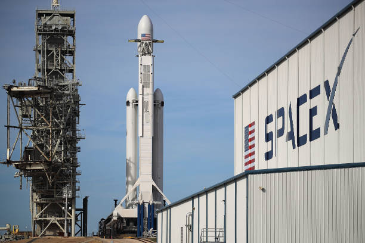
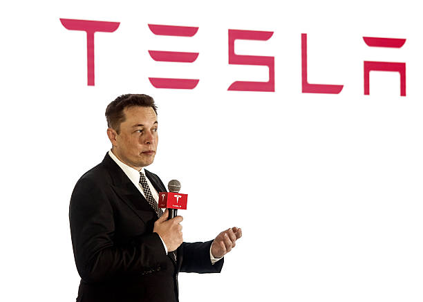

He is the founder, CEO, CTO and chief designer of SpaceX; early investor, CEO and product architect of Tesla, Inc.; founder of The Boring Company; co-founder of Neuralink; and co-founder and initial co-chairman of OpenAI.
Timeline
- Elon Reeve Musk was born on June 28, 1971, in Pretoria, Transvaal, South Africa. At the age of 10, he developed an interest in computing while using the Commodore VIC-20. He learned computer programming using a manual and, by age 12, sold the code of a BASIC-based video game he created called Blastar to PC and Office Technology magazine for approximately $500.
- In 1994, Musk held two internships in Silicon Valley during the summer: at an energy storage start-up called Pinnacle Research Institute, which researched electrolytic ultracapacitors for energy storage, and at the Palo Alto-based start-up Rocket Science Games. Bruce Leak, the former lead engineer behind Apple's QuickTime who had hired Musk, noted: "He had boundless energy. Kids these days have no idea about hardware or how stuff works, but he had a PC hacker background and was not afraid to just go figure things out. In 1995, Musk was accepted to a Ph.D. program in energy physics/materials science at Stanford University in California. Musk attempted to get a job at Netscape, but he says that he never received a response to his job inquiries. He dropped out of Stanford after two days, deciding instead to join the Internet boom and launch an internet startup.
- In 1995, Musk, his brother Kimbal, and Greg Kouri founded web software company Zip2 with money raised from a small group of angel investors. They housed the venture at a small rented office in Palo Alto. The company developed and marketed an internet city guide for the newspaper publishing industry, with maps, directions, and yellow pages. Before the company became successful, Musk says he could not afford an apartment, instead sleeping on the office couch and showering at the YMCA. Furthermore, he says they could only afford one computer, and consequently, according to Musk, "The website was up during the day and I was coding it at night, seven days a week, all the time."
- In March 1999, Musk co-founded X.com, an online financial services and e-mail payment company, with $10 million from the sale of Zip2. One year later, the company merged with Confinity, which had a money-transfer service called PayPal. The merged company focused on the PayPal service and was renamed PayPal in 2001. Musk was ousted in October 2000 from his role as CEO (although he remained on the board) due to disagreements with other company executives over his desire to move PayPal's Unix-based infrastructure to a Microsoft one. n October 2002, PayPal was acquired by eBay for $1.5 billion in stock, of which Musk received $165 million. In 2017, Musk purchased the domain X.com from PayPal for an undisclosed amount, explaining that it had sentimental value to him.
- In 2001, Musk conceived Mars Oasis, in which a miniature greenhouse on Mars would grow food crops and reawaken public interest in space exploration. In October 2001, Musk traveled with a group to Moscow to buy refurbished Dnepr Intercontinental ballistic missiles (ICBMs) that could send the greenhouse payloads into space. He met with companies such as NPO Lavochkin and Kosmotras; however, Musk was seen as a novice and was even spat on by one of the Russian chief designers. The group returned to the United States empty-handed. In February 2002, the group returned to Russia to look for three ICBMs. They had another meeting with Kosmotras and were offered one rocket for $8 million, which Musk rejected. Musk instead decided to start a company that could build affordable rockets. With $100 million of his early fortune, Musk founded Space Exploration Technologies Corp., traded as SpaceX, in May 2002. 
- Tesla, Inc. (originally Tesla Motors) was incorporated in July 2003 by Martin Eberhard and Marc Tarpenning, who financed the company until the Series A round of funding. Both men played active roles in the company's early development prior to Musk's involvement.[106] Musk led the Series A round of investment in February 2004, joining Tesla's board of directors as its chairman. According to Musk, all three, along with J. B. Straubel, were inspired by the earlier AC Propulsion tzero electric roadster prototype. Musk took an active role within the company and oversaw Roadster product design at a detailed level, but was not deeply involved in day-to-day business operations. Following the financial crisis in 2008 and after a series of escalating conflicts in 2007, Eberhard was ousted from the firm. Musk assumed leadership of the company as CEO and product architect in 2008, positions he still holds today. As of 2019, Elon Musk is the longest tenured CEO of any automotive manufacturer globally. 
Childhood
Education
Business Career

You can learn more here